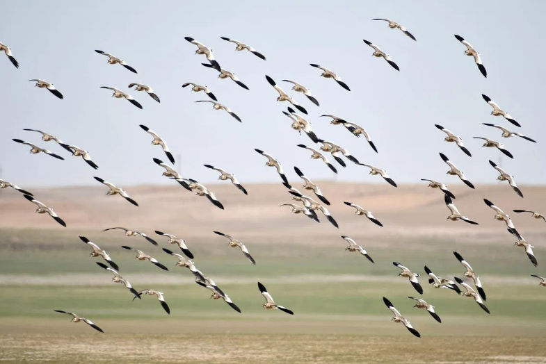

Migratory Birds
Singapore lies along the East Asian–Australasian Flyway, one of the world's major migratory bird routes. Excessive lighting can disorient migrating birds, causing collisions with buildings and disrupting navigation during nighttime migration. Singapore’s NSS Bird Group confirmed this threat in 2022, noting birds circling bright areas until exhausted.
Critical Impact